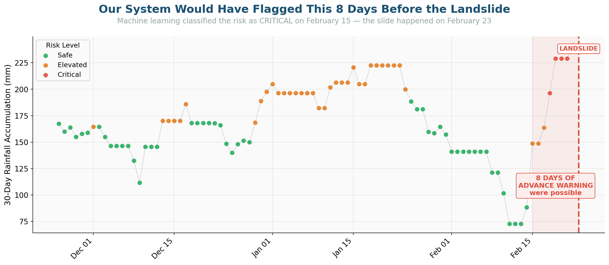
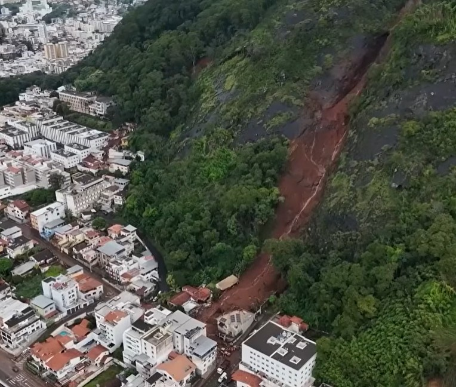
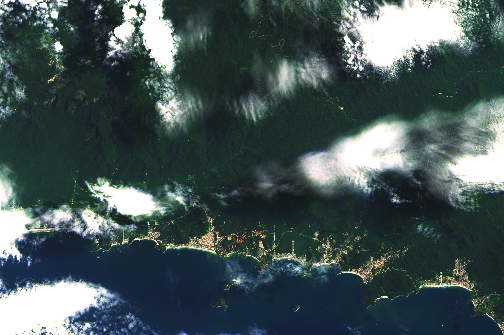

Case Studies
Proven Results, Real Impact

Featured Case Study
Morro do Cristo Landslide — Juiz de Fora, Brazil
February 2026
GeoClaw's satellite analysis of the February 23, 2026 landslide demonstrated that the event was predictable 8 days in advance using satellite rainfall data and machine learning.
188mm
in 6 days triggered failure
8 days
of advance warning possible
78%
vegetation loss confirmed by satellite
InSAR Monitoring
Rainfall Threshold Analysis
ML Risk Classification
Vegetation Change Detection

ML-Based Early Warning System
K-Means clustering and Isolation Forest algorithms classify 90 days of rainfall into Safe, Elevated, and Critical risk zones — enabling automated alerts.

Post-Event Damage Assessment
Satellite + drone imagery integration for rapid damage mapping, landslide inventory, and recovery monitoring across large areas.

Regional Landslide Mapping
Landsat and Sentinel-2 satellite imagery for regional-scale landslide susceptibility assessment and land cover change analysis.